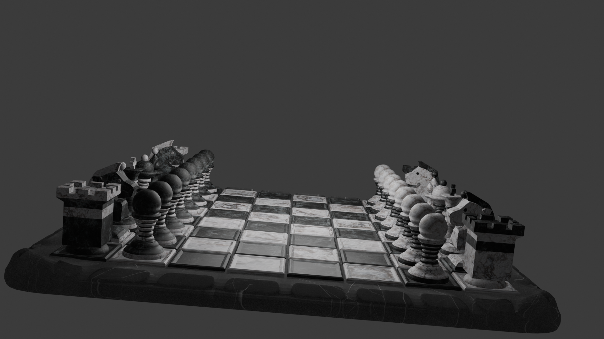
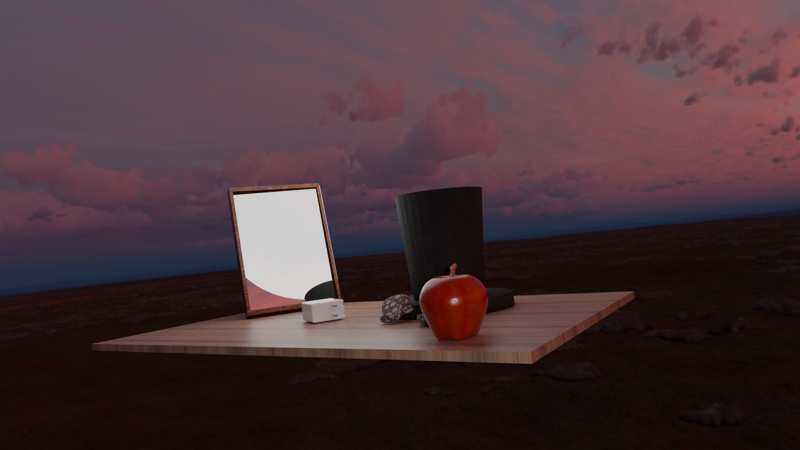
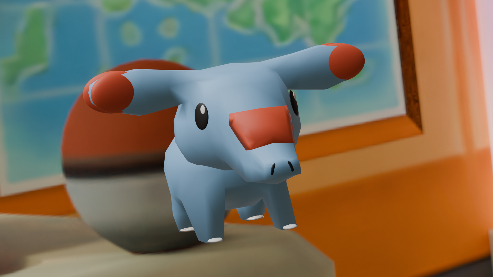

Chessboard
A highly detailed model of an entire chess board, as well as each individual piece.
BLENDER
A few of my Blender projects , mostly from my Dart 203 class at Penn State. I'm still learning 3D in my freetime, so this section is a section to show the things I've been working on and past assignments.

A highly detailed model of an entire chess board, as well as each individual piece.

From an assignment in which I was tasked to create multiple objects from scratch that fit together in one environment. I chose to start with the seal and go from there, as it is my favorite animal.

A smaller environment with fewer objects than the "Seal in the North Pole" piece, but still containing multiple objects.

A single model based on a real-life Pokémon figure I own of the character Phanpy.
Programs and Skills used: